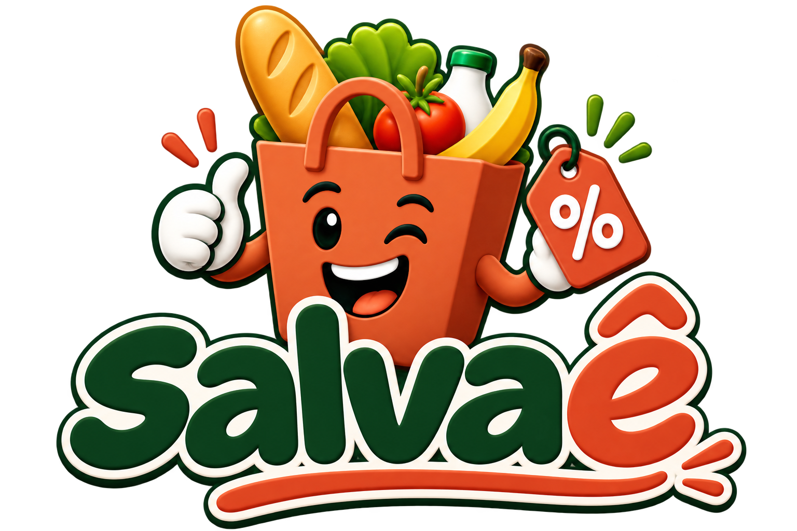
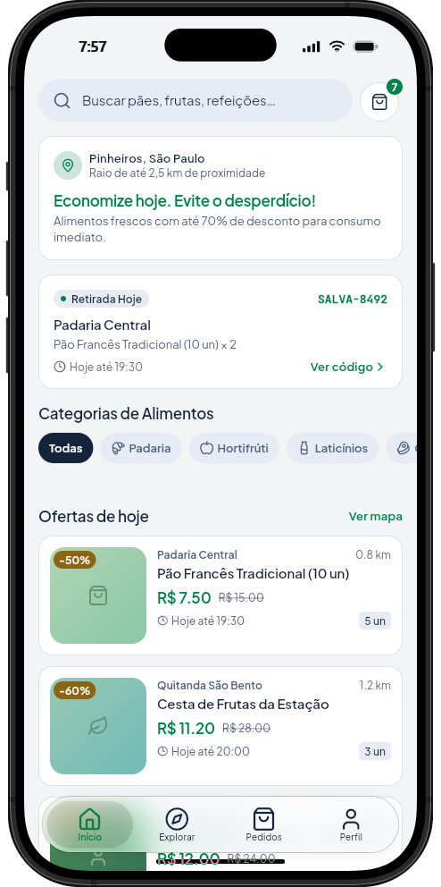
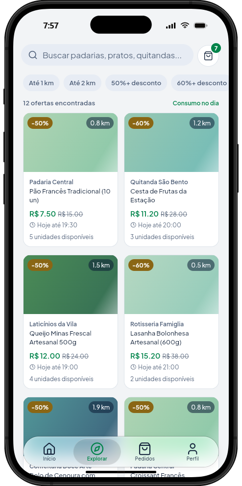
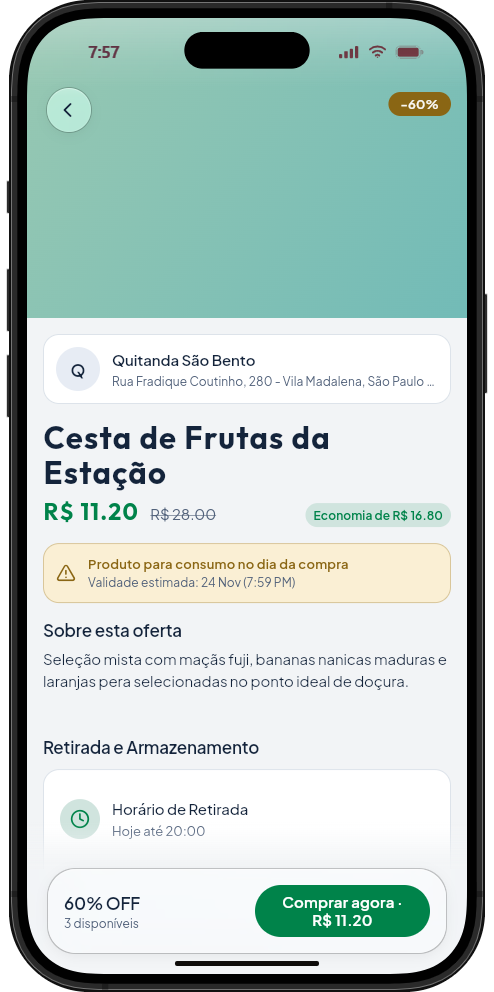
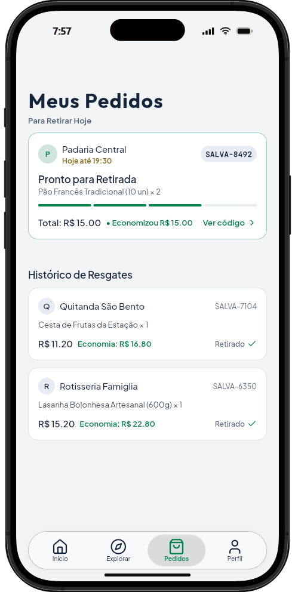
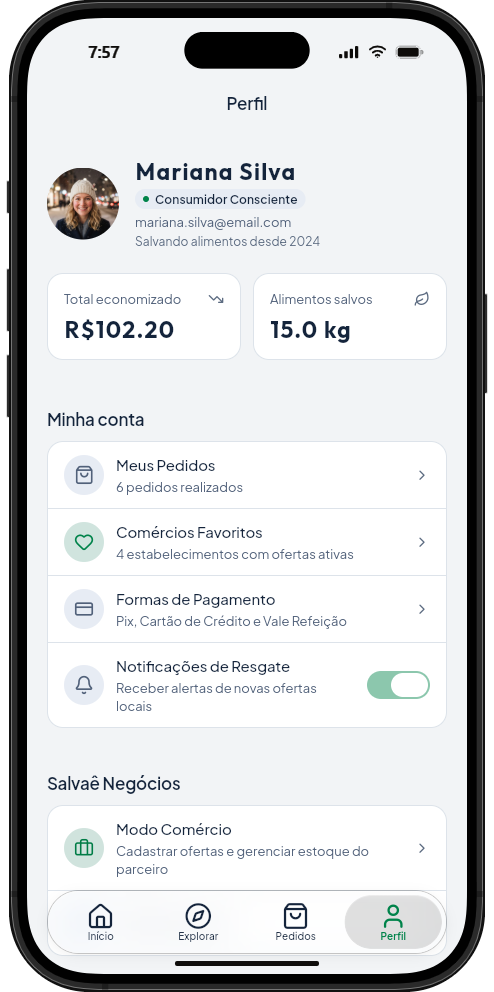

Salvaê
Menos desperdício para amanhã.
Design system e prototipação de aplicativo
para aproveitamento de alimentos.

Ana Julia · Denis · Giulia · Leonardo · Samira
Tecnólogo em Análise e Desenvolvimento de Sistemas · SENAC Londrina · Prof.ª Ma. Isabeli Ramos Neves
Existe oferta. Existe demanda.
Falta o encontro.
Padarias, hortifrútis e restaurantes
O desencontro entre oferta preparada e demanda efetiva gera sobras e desperdício, inclusive em serviços de entrega como o iFood.
e confiável
Estudantes e jovens trabalhadores
Em Londrina, cidade universitária, renda, tempo e estrutura limitados dificultam refeições regulares e econômicas.
Do contexto do usuário à resposta visual
Universitários, estagiários, quem mora sozinho e moradores que querem economizar com clareza sobre o alimento.
Padarias, hortifrútis, rotisserias, mercados e restaurantes com lotes que possam ser oferecidos com responsabilidade.
| Contexto / hipótese | Necessidade | Resposta visual |
|---|---|---|
| Rotina universitária intensa | Encontrar algo rapidamente | Ofertas próximas, categorias e busca |
| Orçamento limitado | Comparar economia | Preço atual, anterior e porcentagem |
| Compra para uma pessoa | Evitar excesso doméstico | Quantidades e itens descritos |
| Confiança alimentar | Saber quando retirar/consumir | Horário destacado e futura validade |
| Comércio parceiro | Gerir disponibilidade | Entrada para modo comércio |
| Inclusão | Compreender e operar a interface | Ícones com rótulos e revisão WCAG |
Hipóteses de público e de uso, a confirmar por pesquisa sistematizada — não há dados de campo anexados.
Salvaê conecta quem tem com quem precisa
Jornada idealizada do aplicativo — proposta de interface prototipada, sem integração com pagamentos ou serviços reais.
Não basta mostrar desconto.
É preciso comunicar confiança.

Telas idealizadas, com apoio de vibe coding
Início
busca, economia e ofertas
Explorar
filtros e grade de ofertas

Oferta
preço, validade e retirada

Meus Pedidos
retirada e histórico

Perfil
conta, preferências e modo comércio
Um design system básico aplicado nas telas do Flutter Flow
Terracota e neutros como base, com verde suave nos detalhes
Escala exata pendente
Barra inferior, cards, chips, campo de busca, alternância e status — já aplicados nas telas
Contraste, alvos de toque e informação que não depende só da cor — validação pendente
Início, Explorar, Oferta, Pedidos e Perfil
Consumo consciente, economia e praticidade; linguagem objetiva e amigável, sem termos alarmistas
Uma divisão de trabalho como a de uma empresa em formação
Programação e prototipação
Protótipos no Flutter Flow com vibe coding: prompts, geração assistida e refinamento visual.
Pesquisa de campo
Investigação do contexto e das necessidades de consumidores e estabelecimentos.
Regras, legislação e riscos
Condicionantes legais, regras operacionais, pontos de falha e prevenção.
Documentação e visão de futuro
Estruturação do projeto, registro das decisões e planejamento de evolução.
Documentação e visão de futuro
Apoio à documentação, organização da proposta e perspectivas de continuidade.
Uma avaliação preliminar e honesta
Barra inferior recorrente · preço com desconto em destaque · distância e horário · retirada pendente distinta de pedidos anteriores
Clareza sobre validade e armazenamento · contraste de textos secundários · padronizar rótulos · testar em aparelhos e fontes distintos
Legislação sanitária · deveres de informação · cancelamento e reembolso · privacidade · responsabilidade plataforma × comércio
Reduzir riscos exige regras claras
Referências iniciais para orientar a validação — não substituem análise jurídica ou sanitária.
Lei 14.016/2020 trata da doação de excedentes próprios para consumo; ofertas pagas têm regras distintas.
RDC Anvisa 216/2004 e normas locais: validar conservação, validade e transporte conforme a operação.
CDC (Lei 8.078/1990): informar preço, quantidade, validade e janela de retirada.
Definir responsabilidades, cancelamento, reembolso e canal de atendimento.
LGPD (Lei 13.709/2018): avaliar finalidade e base legal para conta e localização; limitar coleta, acesso e retenção.
Risco: exposição de endereço, hábitos ou dados de compra.
Riscos: alimento inadequado, estoque desatualizado, atraso ou falha na retirada.
Prever critérios para parceiros, checklist e fluxo para reclamações e incidentes.
Economizar, consumir com consciência, desperdiçar menos.
Facilitar o acesso a refeições mais econômicas
Incentivar o consumo consciente
Contribuir para a redução do desperdício